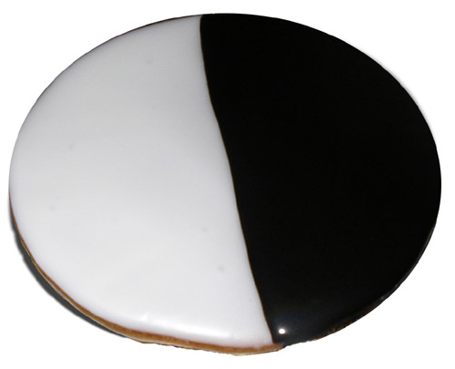

Black & White Cookies

Description
Sometimes called half moon cookies, these are staples from my home, New York City. They are the most delicious blend of a cookie & cake. Topped on one side with a vanilla icing with a slight hint of lemon, and on the other a light chocolate. These are such a treat. In stores, they are usually quite large cookies. At home, I make them about half the size, but it's hard to eat just one!
Recipe credit to epicurious
Ingredients- makes 8 cookies
For cookies
- 1 1/4 cups all purpose flour
- 1/2 tsp baking soda
- 1/2 tsp salt
- 1/3 cup well shaken buttermilk
- 1/2 tsp vanilla
- 1/3 cup unsalted butter, softened
- 1/2 cup granulates sugar
- 1 large egg
For Icings
- 1 1/2 cups confectioner's sugar
- 1 tbsp light corn syrup
- 2 tsp fresh lemon juice
- 1/4 teaspoon vanilla
- 1-2 tbsp water
- 1/4 cup unsweetened Dutch processed cocoa powder
Steps
- Preheat oven to 350°F
- Whisk together flour, baking soda, and salt in a bowl. Stir together buttermilk and vanilla in a cup.
- Beat together butter and sugar in a large bowl with an electric mixer until pale and fluffy, about 3 minutes, then add egg, beating until combined well. Mix in flour mixture and buttermilk mixture alternately in batches at low speed (scraping down side of bowl occasionally), beginning and ending with flour mixture. Mix until smooth.
- Spoon 1/4 cups of batter about 2 inches apart onto a buttered large baking sheet. Bake in middle of oven until tops are puffed and pale golden, and cookies spring back when touched, 15 to 17 minutes. Transfer with a metal spatula to a rack and chill (to cool quickly), about 5 minutes.
While cookies chill, make icing
- Stir together confectioners sugar, corn syrup, lemon juice, vanilla, and 1 tablespoon water in a small bowl until smooth. Transfer half of icing to another bowl and stir in cocoa, adding more water, 1/2 teaspoon at a time, to thin to same consistency as white icing.
- Once cookies have cooled, turn cookies flat sides up, then spread white icing over half of each and chocolate over other half.